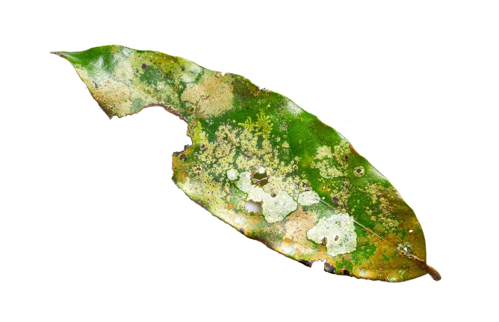
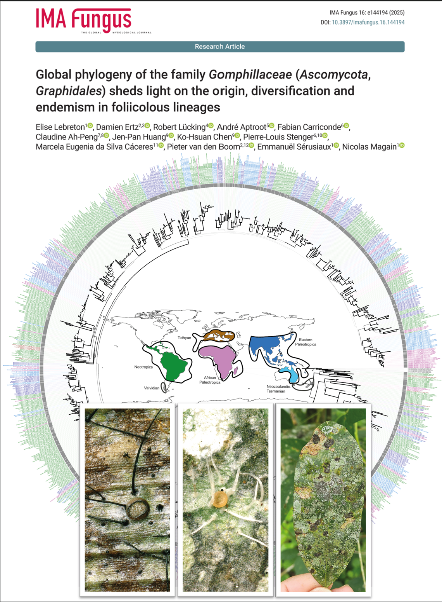

Research
Life on living-leaves
Foliicolous (leaf-dwelling) lichens represent an extreme ecological strategy. Confined to short-lived substrates, they experience temporal and spatial constraints that should, in theory, limit diversification. Yet, these lineages are remarkably diverse and widespread across the tropics.

The question
Using foliicolous lichens as a model, my research explores a broader question: how do organisms diversify under strong ecological constraints?
Study system
Gomphillaceae: a model for studying lichen evolution
My PhD focused on the family Gomphillaceae (Ascomycota, Graphidales), the most diverse and abundant groups of foliicolous lichens.
I reconstructed the first global, multilocus phylogeny of the family, providing a robust framework to investigate: (i) diversification dynamics and evolutionary tempo, (ii) historical biogeography and dispersal across tropical regions, (iii) the role of ecological and symbiotic traits in shaping lineage evolution.
Beyond Gomphillaceae, I contribute to lichen inventories in understudied regions, including parts of the Caribbean and the tropical Pacific. I also work on species description, taxonomic revisions, and classification across several groups of lichen-forming fungi.

Future research directions
I would like to build on my work in lichen systematics and evolution by exploring four areas.
- ▸Comparative genomics to investigate how lichen symbioses evolve.
- ▸Museomics to address taxonomic and evolutionary questions using DNA from historical herbarium specimens.
- ▸Evolution of lichen chemistry to understand how secondary metabolites have diversified across lichen lineages.
- ▸Community assembly to investigate how lichen communities establish on living leaves in tropical forests.
I'm currently seeking postdoctoral opportunities in these areas and welcome collaborations to develop new research projects.
Get in touch →